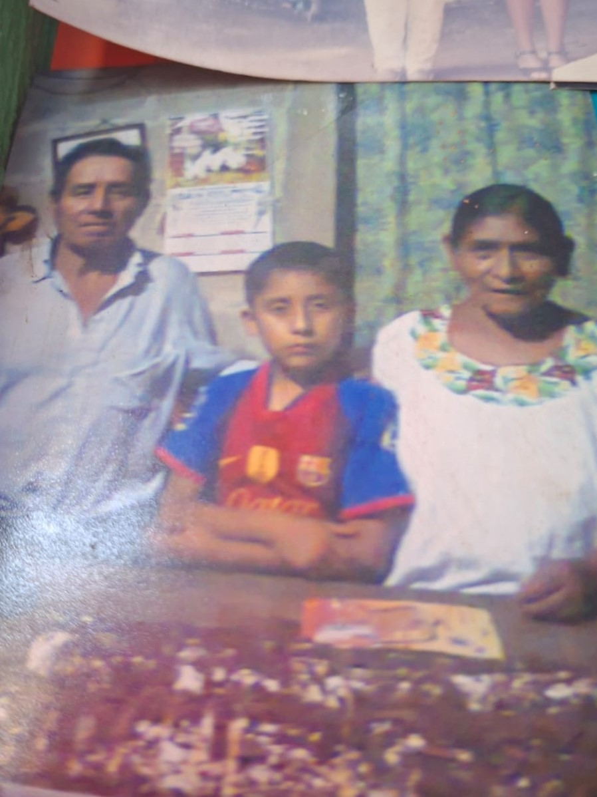
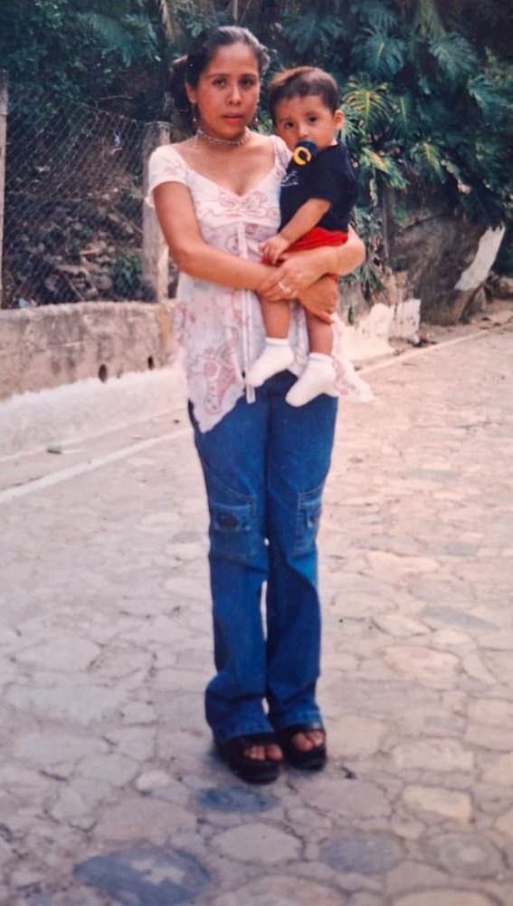

La muerte de mis abuelos, al principio uno no dimensiona, hasta que el recuerdo de aquellas personas que velaban por uno llega duele, con mi abuelo tengo el recuerdo de que cada que el tenia dinero por x o y llegaba con su bolsita de pan a la casa a dejárnosla y así a cada familia, recuerdo las veces que el llegaba y no se animaba a pasar, le decíamos que tomara asiento y que tomara algo, las veces que el llegaba en su bicicleta y que no se rajaba para lo que presentaba, una persona que conmigo siempre fue buena persona.
Mi abuela fue algo similar, cada que uno estaba solo por alguna situación, ella siempre llegaba con un plato de comida o algo, preguntaba si uno comió algo, y lo mas lindo que recuerdo es que ella siempre sacaba su monedero y me entregaba algo para comprar, el que no lo aceptáramos le dolía más, cada navidad siempre era tradición almorzar con ella, después de la quema de cuetes y demás los días 25 y 1, organizaba y repartía uvas, manzanas y demás a todos los nietos, las ultimas veces que la vi fue cuando estaba ya mala, por cosas del trabajo me mude a la capital y me duele pensar que siempre estuvo para nosotros y muchas veces por situaciones similares uno no pudo corresponderles de la misma manera.

Una que me duele es haber dejado a mi mamá y hermanos de un día para otro, yo en el 2023 vivía aun en casa de mis papás, tenia un trabajo sencillo que no me ayudaba a crecer mucho, hasta que se dio la oportunidad de salir de mi zona de confort, sin mucho pensarlo tome la decisión esa misma tarde de renunciar y despedirme de los que consideraba relevantes, aunque esos días no me hice la idea de lo que paso, el saber que mi mamá lloro por mi (una persona que no tenia metas claras en ese entonces, no sabia aun lo que quería) pues me dolió mucho, el saber que en ese entonces mi amigo de 6-7 años lo dejaría solo , también me toco mucho. Lamentablemente a mi papá le toco hacer lo mismo cuando nosotros estábamos en 4to -5to primaria, pero creo que, sin el esfuerzo de mi papa en trabajar lejos, no hubiese salido adelante ni mi hermana ni yo. Y lo mismo paso por mi cabeza al dejarlos solos, aunque son cosas que pasan, me hubiese gustado no ser duro y egoísta en la forma que tome las decisiones, siendo esta actitud sembrada por una expareja que tuve, el mucho sobre pensar siento que me hizo ser mala persona con mi familia, principalmente mi mamá
